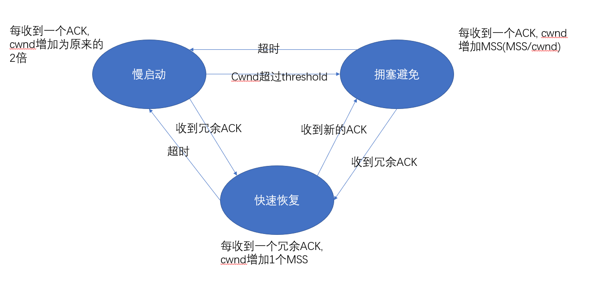

网络模型
五层网络模型
分为应用层、传输层、网络层、数据链路层、物理层。
现实中的网络模型
将五层网络模型中的数据链路层和物理层合并为网络接口层
OSI七层网络模型
将五层网络模型中的应用层拆分为会话层、表示层、应用层。
各层的作用
- 物理层。将01比特从一台节点通过物理链路传递到另一个节点
- 数据链路层。将数据分组从一个节点传递到另一个节点，同时提供差错检测和纠正的功能。
- 网络层。将数据包从一台主机传递到另一台主机，提供的是一种尽力而为的服务。
- 传输层。提供应用进程之间的数据传输服务。
- 应用层。使用一些具体的协议传输数据。这些协议如HTTP、DNS、FTP、SMTP等。
应用层
SMTP和HTTP
HTTP是一个”拉”协议。客户端发起请求之后服务端发送响应。
SMTP是一个“推”协议。发送方mail服务器直接将邮件推到接收方服务器上。
DNS工作原理
每个ISP通常都有一个本地DNS服务器
- 主机想要获取一个域名对应的IP地址，则向本地DNS服务器发送请求。
- 本地DNS依次向根服务器以及各级服务器发送请求获取域名对应的IP地址（如果已有缓存则不用发送请求）。
其中主机向本地DNS服务器发送请求是递归查询，本地DNS服务器向其他服务器发送请求是迭代查询。
运输层
运输层提供的基本服务
- 数据交付
- 差错检测
这也是UDP提供的仅有的两种服务。
TCP提供的额外的服务
- 可靠数据传输（包括序号、确认、定时器、流量控制）
- 拥塞控制
TCP的演化
停等协议（每次只发一条数据，确认后发送下一条数据）
- 为了解决数据包出错的问题，引入确认（肯定确认和否定确认）机制。
- 确认帧可能受损，如果收到一个损坏的帧，就重发数据包。为了区分是重传还是新数据包，引入序号机制。
- 为了解决丢包问题，引入定时器机制。
流水线可靠数据传输协议
- 回退N步。
- 采用累计确认
- 超时时发送方重传所有未确认分组
- 选择重传。
- 接收方缓存接受到的失序分组
- 接收到[recv_base - N, recv_base - 1] 和[recv_base, recv_base + N - 1]都需要发送ACK
- 窗口大小应该小于等于序号区间的一半。
TCP的可靠数据传输
- 累计确认。（发送确认帧时说明之前的帧都已收到）
- 超时间隔加倍。（超时的时候定时器的间隔加倍，收到ACK后会重新计算超时间隔）
- 快速重传：如果收到失序的数据，冗余发送3个ACK
TCP：回退N or 选择重传
TCP算是两者的结合体，使用累计确认的方法，但是接收方会缓存失序的帧。
TCP的流量控制
- 接收窗口大小 = 缓冲区大小 - 已接收但是没有被上层使用的数据
- 为了让发送方不会淹没接受方，发送方的已发送未确认数据大小应该≤接收窗口大小
TCP的拥塞控制
cwnd表示拥塞窗口大小，MSS为TCP的最大分段大小。
已发送未确认数据大小应该≤接收窗口大小 并且 ≤ 拥塞窗口大小
- 慢启动。每次收到一个ACK，cwnd变为原来的2次方，超时则恢复为1
- 拥塞避免。每次收到ACK只增加（MSS（MSS/cwnd））
- 快速恢复。每次收到冗余ACK只增加MSS
超时的时候threshold被设置为cwnd/2
转化关系

网络层（数据层面）
概述
- 网络层提供两种功能：
- 转发。当一个分组到达网络层时，网络层应该将它移动到合适的出口。
- 路由选择。决定分组到目的地应该走的路径。
- 网络层提供一种尽力而为的交付模式
路由器的工作原理
- 路由器匹配时采用最长前缀匹配原则从而进行路由选择
- 丢包问题
- 输入队列丢包。不同输入队列的分组准备前往同一个输出队列（交换的速度没有足够快），第一个包后面的包将会排队，进而在队列满的时候将会发生丢包。
- 输出队列丢包。如果交换速度足够快，多个输入收到的包准备前往相同的输出口，输出队列将会排队，进而发生丢包
IPv4
报文格式
数据包格式
版本 首部长度 服务类型 数据包长度
16位标识 标志位 13位片偏移
寿命 上层协议 校验和
源IP
目的IP
- 服务类型可用来区分实时流量和非实时流量
- 标识 标志 片偏移：数据链路层有MTU最大传输单元，如果IP长度超过MTU，路由器需要将其拆分。（到目的地再被组装）。
- 首部校验和：将首部每两个字节看成一个数，相加的和作为校验和。(TCP的校验和计算整个数据报，而IP的校验和只计算首部)
- 上层协议：目的地根据该字段选择将数据交给哪一层。
DHCP（动态主机配置协议）
DHCP是使用UDP进行传递的。
- 客户广播一条ICMP查询报文，获取可用的IP地址（源IP为0.0.0.0，目标IP为255.255.255.255）
- ICMP分配一个IP，并生成并广播ICMP响应报文（源IP为服务器IP，目标IP为255.255.255.255）（可能客户所在子网有多个ICMP服务器，所以客户需要选择一个并进行确认）。
- 客户端广播一条请求报文，请求将某一IP设置为自己的IP。
- 服务端响应ACK报文，客户端将该IP作为自己的IP。
NAT（本地地址转换）
路由器维护一个NAT表，分别存储局域网IP：端口和广域网IP：端口的对应关系，在数据包进出的时候对IP进行转换，进而完成使用一个IP地址完成最高6万（取决于端口的数量）个用户的联网工作。
IPv6
IPv4对比IPv6
- 分片字段被删除。如果IP分组过大，路由器将向源主机发送一个”分组过大”ICMP报文。分片工作留给源主机完成。
- 首部校验和被删除。每次TTL发生变化，都需要重新计算校验和，工作量较大，因此在IPv6中该字段被删除。
网络层（控制层面）
路由选择算法
链路状态协议（集中式）
每个节点维护整个子网的链路状态，进而计算出源节点到目标节点的花销，使用Dijkstra算法。
距离矢量协议（分布式）
每个节点向直接邻居发送当前到各个节点的最短路径，同时接受邻居的信息并更新，直到自己的各最短路径不再发生变化。
ICMP（互联网控制信息报文）
ping和traceroute都使用该报文
数据链路层
通过单一信道，将数据从一个节点移动到相邻的节点。
差错检测和纠正
- 奇偶校验
- 循环冗余校验
可靠重传
数据链路层的可靠重传保证了在链路上纠错，而不是传输层或应用层的端到端重传。
多路访问控制协议
信道划分协议
时分复用 频分复用
随机接入协议
纯ALOHA、时隙ALOHA、CSMA、CSMA/CD
轮流协议
ARP协议(地址解析协议)
每个主机上都会维护一个ARP表，里面存储子网内的IP和MAC地址的对应关系。想把数据传递到子网内的下一个节点时，就将目标节点的MAC地址设置为目标MAC地址。
MAC地址通过查询ARP获取，如果ARP表中不存在，则构造一个ARP分组并在子网内广播。目标主机收到分组之后返回自己的MAC地址。（使用的是MAC广播地址，全是F）